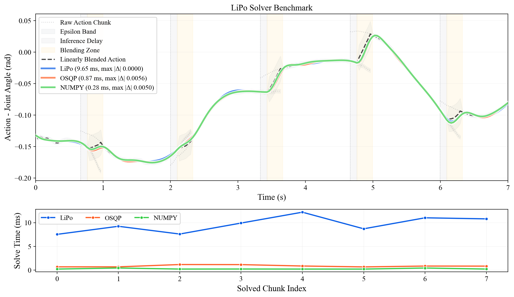

IJCAS 2025 · Kwangwoon University
LiPo.
A Lightweight Post-optimization Framework for Smoothing Action Chunks Generated by Learned Policies
Department of Robotics, Kwangwoon University, Seoul, Republic of Korea
International Journal of Control, Automation and Systems, vol. 23, no. 11, pp. 3284–3292, 2025
The problem
Learned policies speak in chunks.
Imitation-learning policies do not emit one action at a time. They emit a chunk — a whole stretch of future actions — and the robot plays it back while the next chunk is being computed. The seams between those chunks are where the trouble starts.
At a seam the commanded trajectory is continuous in position but not in velocity. The arm jerks. On a slow pick-and-place you may not notice. On a dynamic task — throwing a ball, swinging a heavy object — that discontinuity lands exactly where momentum matters, and it shows up as vibration, as a weaker throw, and as stress on the hardware.
Core idea
Three steps, after the policy.
LiPo does not touch the policy. It sits downstream of whatever produced the chunks and rewrites them into something a position-controlled arm can actually track.
01
Scheduling around inference delay
Computing the next chunk takes time. If the robot only asks for it once the current chunk runs out, it waits — and the wait is visible in the motion. LiPo schedules chunks to overlap, so the next one is ready before it is needed.
02
Blending the overlap
Inside the overlapping region the two chunks are combined by linear blending. The handover stops being an instant switch and becomes a transition, which removes the step in velocity at the seam.
03
Jerk minimization
What remains is refined by minimizing jerk inside a bounded perturbation space around the blended trajectory. The result stays close to what the policy asked for, while being smooth enough to execute.
No retraining, no policy changes. LiPo is a post-processing stage, so it attaches to any method that outputs action chunks — ACT, Diffusion Policy, or anything else with the same interface.
Experiment
Ball toss, with and without.
A position-controlled arm tosses a ball into a box. The same policy drives both runs; the only difference is whether its chunks pass through LiPo first.
Watch the arm as it winds up. Without LiPo the motion stutters where one chunk hands over to the next, and the release is less consistent.
Benchmark
Cheap enough to sit in the loop.
Post-optimization is only useful if it finishes before the next control tick. The repository ships a benchmark that times the reference implementation against a QP formulation of the same problem.

| Implementation | Avg [ms] | Std [ms] | Max |Δ| vs LiPo |
|---|---|---|---|
| LiPo (reference) | 7.207 | 1.112 | — |
| OSQP QP | 0.553 | 0.119 | 0.005626 |
Both implementations solve the same post-optimization. The QP formulation runs about thirteen times faster and stays within 0.006 of the reference trajectory, which leaves plenty of headroom inside a millisecond-scale control loop.
Reproduce with python lipo_benchmark.py in the repository.
Resources
Paper, code, citation.
@article{son2025lipo,
title = {LiPo: A Lightweight Post-optimization Framework for Smoothing Action Chunks Generated by Learned Policies},
author = {Son, Dongwoo and Park, Suhan},
journal = {International Journal of Control, Automation and Systems},
volume = {23},
number = {11},
pages = {3284--3292},
year = {2025},
doi = {10.1007/s12555-025-0537-0}
}